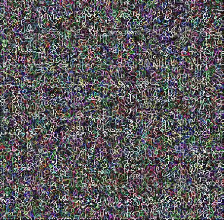

GaussFusion：使用几何信息视频生成器改进野外 3D 重建
简单摘要
逼真3D重建和新视角合成是计算机视觉的基础问题。3DGS成为高质量重建和渲染的主流表示，而前馈方法通过单次网络传播直接预测3D高斯参数，相比传统优化式管线实现了更快更鲁棒的重建。然而现有方法在稀疏视图和欠捕获场景下仍存在伪影。为缓解这一问题，若干方法尝试利用生成先验增强3D重建，但有限的条件化使这些方法仅对轻微模糊或颜色偏移有效。此外针对优化式3DGS管线训练的方法无法泛化到前馈重建。该工作提出GP-Buffer，一种像素对齐的视频表示，编码来自3D重建的多模态线索（颜色、深度、不透明度、法线和协方差），为伪影识别和校正提供远丰富于仅使用RGB的几何感知信息。

核心创新
1. 提出GP-Buffer，一种像素对齐的视频表示，编码多模态几何线索，为伪影识别和校正提供几何感知信息。
2. 设计Geometry Adapter模块，将外观和几何特征注入视频生成器的Transformer主干，实现几何感知的条件生成。
3. 提出全面的伪影模拟策略，在训练中暴露模型于多种方法和数据集所产生的多样化退化模式。
4. 首次实现单一高质量重建细化模型对不同3DGS范式的泛化——包括优化式、前馈式和3D生成式。
5. 以16 FPS的高效率将低质量3D渲染转化为逼真无伪影的渲染结果。
技术细节
考虑由一组 3D 高斯基元表示的现有 3DGS 重建及其具有已知相机参数的相应输入图像，即输入视图的数量。我们的目标是增强小说视图渲染并使用它们进一步优化。我们通过从 3DGS 重建的两个版本渲染每个场景来构建真实和损坏渲染的配对视频。作者这样设计，是为了把这一节的输入、约束和输出关系讲清楚。

3 高斯融合
考虑由一组 3D 高斯基元表示的现有 3DGS 重建及其具有已知相机参数的相应输入图像，即输入视图的数量。我们的目标是增强小说视图渲染并使用它们进一步优化。作者这样设计，是为了把这一节的输入、约束和输出关系讲清楚。
3.1 预赛
高斯参数从稀疏的运动结构点云中初始化，然后通过随机梯度下降进行优化，以最小化渲染图像和地面实况图像之间的损失函数。前馈 3DGS 重建模型学习从一组姿势/非姿势输入图像中直接预测一组完整的 3D 高斯参数。神经网络聚合视图中的几何和外观线索，以在单个前向传递中输出每个高斯的所有参数（位置、旋转、缩放、不透明度和 SH 颜色）。作者这样设计，是为了把这一节的输入、约束和输出关系讲清楚。
$$ \mathbf{C}(\mathbf{u}) = \sum_{i=1}^{N} \mathbf{c}_i' \gamma_i \prod_{j=1}^{i-1} (1 - \gamma_j) $$
放在“高斯融合”这一部分看。这条式子描述了多个分量的聚合或逐步合成过程。它通常表示模型如何把局部贡献、概率权重或多项损失累积成最终结果。
$$ \mathcal{L} = (1 - \lambda) \mathcal{L}_{L_1}(\mathbf{C}, \mathbf{C}_{\text{gt}}) + \lambda \mathcal{L}_{\text{D-SSIM}}(\mathbf{C}, \mathbf{C}_{\text{gt}}). $$
这条式子是在定义一个可直接计算的中间量：右侧把相对位置、方向、权重或比例关系组合起来，左侧则把这个组合结果记成后续模块要反复使用的变量。
$$ x_t = t x_1 + (1-t)x_0, $$
放在“高斯融合”这一部分看，它重点在定义或约束 x t 这一项。这条式子是在定义一个可直接计算的中间量：右侧把相对位置、方向、权重或比例关系组合起来，左侧则把这个组合结果记成后续模块要反复使用的变量。
$$ \mathcal{L} = \mathbb{E}_{x_0, x_1, c, t} [\|u_\theta(x_t, c, t) - v_t\|^2], $$
放在“高斯融合”这一部分看，它重点在定义或约束 L 这一项。这条式子是在定义一个可直接计算的中间量：右侧把相对位置、方向、权重或比例关系组合起来，左侧则把这个组合结果记成后续模块要反复使用的变量。
3.2 高斯原语缓冲区
尽管直接调节 3D 主干已经为 3D 重建带来了希望，但这些方法很难扩展到图元数量大幅增长的大型复杂场景。深度使用渲染器的 ED（预期深度）模式进行渲染，该模式计算所有贡献的 splats 的加权平均深度。作者这样设计，是为了把这一节的输入、约束和输出关系讲清楚。
$$ \mathcal{G} = \{\mathbf{C}, A, D, \mathbf{N}, \mathbf{U}\}, $$
放在“高斯融合”这一部分看，这条式子重点不是孤立地罗列符号，而是交代 G 如何承接前面的输入并把结果交给后续步骤。
$$ \mathbf{N}(\mathbf{u}) = \operatorname{normalize}(\partial_u \mathbf{P}_{\text{cam}} \times \partial_v \mathbf{P}_{\text{cam}}), $$
放在“高斯融合”这一部分看，这条式子重点不是孤立地罗列符号，而是交代 这一项中间量 如何承接前面的输入并把结果交给后续步骤。
3.3 几何信息视频生成器
将 GP-Buffer 作为输入，可选地以场景的文本描述为条件，并预测精细的彩色视频（图 1）。GP-Buffer 提供从 3D 重建中提取的几何和外观感知线索，这些线索通过我们的几何适配器进行编码并注入到生成过程中。这些潜在变量按通道连接起来形成统一的表示虽然 VAE 最初是为 RGB 设计的。作者这样设计，是为了把这一节的输入、约束和输出关系讲清楚。
$$ \operatorname{concat}(\mathbf{z}_{\mathbf{C}}, \mathbf{z}_{A}, \mathbf{z}_{D}, \mathbf{z}_{\mathbf{N}}, \mathbf{z}_{\mathbf{U}}) \in \mathbb{R}^{\frac{W}{8} \times \frac{H}{8} \times 5C \times \frac{T}{4}}. $$
放在“高斯融合”这一部分看，这条式子重点不是孤立地罗列符号，而是交代 concat 如何承接前面的输入并把结果交给后续步骤。
3.4 3D重建更新
围绕 3.4 3D重建更新，为了完善现有的 3D 重建，我们生成平滑的新颖视图轨迹，对捕获的视图之间的相机路径进行密集采样，如下所示。最后，我们将生成的新颖视图与原始输入合并，并使用标准光度损失（方程式 1）优化 3D 高斯图。作者这样设计，是为了把这一节的输入、约束和输出关系讲清楚。
3.5 微调策略
典型的视频扩散模型需要 30-50 个迭代去噪步骤，导致每个视频的推理时间为几分钟。为了实现高效的细化，我们采用两阶段微调策略，将多步视频生成器转换为紧凑的四步细化模型。获得蒸馏生成器后，我们将几何适配器 (GA) 模块集成到其 DiT 主干中以获得完整模型。作者这样设计，是为了把这一节的输入、约束和输出关系讲清楚。
4 神器模拟
训练可推广的渲染细化模型的一个关键因素是全面的数据生成管道，它可以准确地模仿现实世界中观察到的各种工件。我们通过从 3DGS 重建的两个版本渲染每个场景来构建真实和损坏渲染的配对视频。与 中使用的统一方案不同，这种随机下采样引入了时间不规则性，可以更好地反映现实世界的条件。
实验结论
我们在常见的小说视图综合基准上评估我们的方法。我们将我们的方法与开源、最先进的方法进行比较，包括 DiFiX3D+ 、 GenFusion 和 ExploreGS。在下文中，最佳结果突出显示为第一颜色Fst、第二颜色Snd 和第三颜色Trd。
更重要的是，我们发现与单个数据集上的训练相比，我们的联合训练模型具有更高的性能。根据 ，添加几何模态（深度、法线、alpha、协方差）可以持续提高渲染精度和感知质量。相比之下，结合我们的 GA 可以持续改善所有指标，将 PSNR 从 20.90 提高到 22.

图 6：该图展示了论文中的关键模块、实验设置或可视化效果5.1 结果
我们首先评估纯渲染细化、新颖视图合成的性能，如表所示。GenFusion 和 ExploreGS 尽管利用了视频扩散框架，但与我们的 GP 缓冲区和次优调节策略相比，由于调节信号不足，性能较低。更重要的是，我们发现与单个数据集上的训练相比，我们的联合训练模型具有更高的性能。
5.2 消融研究
我们通过训练五个独立的模型来分析 GP-Buffer 中每个几何通道的贡献，每个模型都有不同的输入模式组合。根据 ，添加几何模态（深度、法线、alpha、协方差）可以持续提高渲染精度和感知质量。相比之下，结合我们的 GA 可以持续改善所有指标，将 PSNR 从 20.90 提高到 22.55，并将 LPIPS 和 FID 分别降低 0.03 和 1.36。
理解评价
如果把这篇论文放回问题背景里看，它真正的价值在于：我们提出了一种通过几何信息视频生成来改进野外 3D 高斯泼溅 (3DGS) 重建的新方法。这说明作者不是只补一个局部模块，而是在重新组织问题该怎样被解决。
最能支撑这个判断的，还是实验给出的证据：在下文中，最佳结果突出显示为第一颜色Fst、第二颜色Snd 和第三颜色Trd。换句话说，这些设计并不只是概念上更完整，而是实实在在改变了最终结果。
当然，它离真正成熟的方案还有距离：我们在 Supp 中讨论我们的局限性和未来的工作。后续更值得继续推进的方向，是 未来继续提升效率、泛化能力以及在更复杂场景下的稳定性。